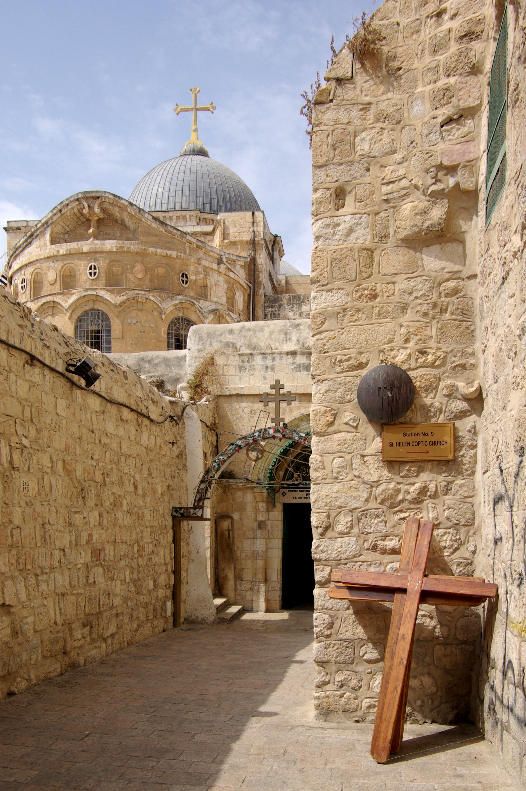

Church of the Holy Sepulchre

- Find Name
- Church of the Holy Sepulchre
- Historical Period
- Roman
- Artifact Date
- 1st century AD (quarry and tombs); church dedicated AD 335
- Date Discovered
- 4th century (Constantinian building); tombs excavated in the 20th century
- Discovery Location
- Jerusalem, Israel
- Current Location
- In situ, Jerusalem Old City
- Timeline Era
- Life of Christ
- Description
- The church built by Constantine over a 1st-century quarry and rock-cut tombs outside Jerusalem's old wall, excavated in the 20th century. The tombs themselves are real and of the right period, and Christians have venerated this place as the site of Jesus' crucifixion and burial since the 4th century. But the identification as Jesus' actual tomb is traditional and debated, not proven, and this entry states that plainly rather than presenting tradition as fact.
- Biblical Significance
- Whether or not these are the very stones, the church marks the place where Christians have remembered the cross and the empty tomb longer than anywhere else on earth. Its contested stones preach a useful lesson: the resurrection does not stand or fall on one address, but on witnesses who saw the risen Lord.
- Evidence Class
- Disputed
- Interpretations
- Scholars agree the 1st-century quarry and tombs beneath the church are genuine; they debate whether this is the tomb of Joseph of Arimathea, with the Garden Tomb as the rival traditional candidate. The identification is traditional, not proven.
- Scripture Illuminated
- Related Books
- Related Places
- Alternative Names
- Church of the Resurrection
Awaiting Review Not yet checked against scholarly sources. Treat its claims as provisional until this entry is reviewed. About verification
Last reviewed: not yet reviewed